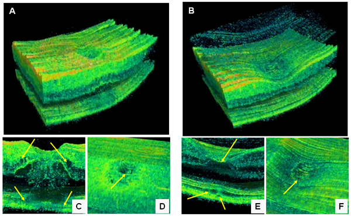
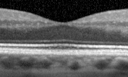
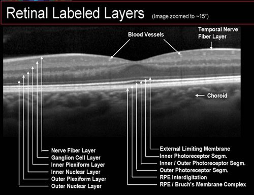

What is it?
See your retina in 3D cross-section
Optical Coherence Tomography (OCT) is a non-invasive imaging test that uses light waves to take cross-sectional pictures of your retina — the light-sensitive tissue lining the back of the eye.
Our clinics feature the latest 3D spectral OCT instrument, allowing your optometrist to visualize each of the retina's distinctive layers, map their thickness, and detect abnormalities that are impossible to see with the naked eye.
How It Works
Layer-by-layer retinal analysis
Non-Invasive
No contact with the eye. The scan uses light waves — fast, painless, and safe for all patients.
Layer Mapping
Each retinal layer is individually mapped and measured, revealing thickness changes invisible to conventional exams.
Optic Nerve Analysis
Evaluates nerve fibre changes associated with glaucoma — catching the disease before vision loss begins.
What We See
Real OCT scan images

3D spectral OCT — multiple cross-sectional scans of the retina captured simultaneously

Normal fovea cross-section — the central region of the retina responsible for sharp vision

Labeled retinal layers — each distinct layer mapped and measured for thickness abnormalities
Conditions Diagnosed
What OCT can detect
OCT is one of the most powerful tools in modern optometry for early detection of sight-threatening conditions, including:
Why It Matters
Early detection saves sight
Many serious eye conditions have no early symptoms. OCT finds them before vision is affected.
Serial OCT scans over time let your optometrist monitor how a condition is developing and adjust treatment accordingly.
Precise thickness measurements help determine whether treatment is needed and whether current treatment is working.
Ask about OCT at your next visit
Available at our clinics across Alberta. Book your comprehensive eye exam today.
Book an AppointmentOr call us at 1-888-381-2677